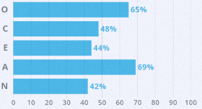

Team Profile
Our chosen group name is Cornichon, and here is a short description of each member with student number and other details included.
Quy Dat Le
Student Number: s3794387
Website: Quy Dat Le
Personal Information:
I'm a first year RMIT student studying the Bachelor of Information technology. I'm from Vietnam and
this is my third year living in Melbourne. I really like the environment and living experience here
as well as it's people. I speak several languages including English, Vietnamese,... and that's
pretty much it. Just enjoy you thinking I'm a genius for a second there :).
Michael Jurie
Student Number: s3785631
Website: Michael Jurie
Personal Information:
I was born in Melbourne, Australia and have not lived anywhere else but have travelled frequently
with family. I was enrolled in Melbourne Grammar School from the day i started schooling and
graduated year 12 in 2018. My interest in IT started at a young age with the family computer, i
would always be playing games, then once i got my own personal laptop i got more interested in the
technical side and was introduced to a robotics subject that was available at school. After a year
of robotics our school, a inter-school competition was held, and after that my interest in IT
related concepts has only grown, moving from robotics to programming and game hacking.
Victoria Elliot
Student Number: s3710716
Website: Victoria Elliot
Personal Information:
I am currently studying a bachelor of Information Technology. I have a rabbit named Albert. My
interest in IT began at the start of high school in year 7 IT class, where I created my first
website using very minimal HTML.
Thomas Pfundt
Student Number: s3724447
Website: Thomas Pfundt
Personal Information:
Hi, my name is Tom. I am Australian. I am a mature aged student studying a Bachelor of IT at RMIT
University. After I completed year 12, I undertook an Electrical Apprenticeship and worked in
various roles in smelting and mine processing operations for the past 12 years. These roles include
electrician, Maintenance & Operations Supervisor and Process Control Technician/Engineer. An
interesting fact about myself is that I love travelling. I spent 3 months backpacking around Europe
in 2014, multiple trips to New Zealand, South East Asia and North America. I am heading to Fiji for
a short break over Easter.
Braden Smith
Student Number: s3787174
Website: Braden Smith
Personal Information:
I have come from a small town of Echuca, located on the Murry River, where I attended all of my
education, from kindergarden to high school. I am able to ride a Uni-cycle, I have a cat called
Pretzel, I used to play Football, and tend to game quite a bit.
Franklin Edyson
Student Number: s3784440
Website:Franklin Edyson
Personal Information:
My family background is Indonesian-Chinese and I was brought up in Melbourne. I am a recent Year 12
graduate at Suzanne Cory High School. I am bilingual in English and Indonesian, and I am also
proficient in Mandarin. As well as for my passion for IT, I am also an Aviation Enthusiast! I love
to travel on aircraft around the world, visiting new destinations and expanding my network of
connections with other professionals from different industries.
Team Profile
The purpose of this segment is to look at the individual group members test results, such as the myers briggs test or other emotion / working ability tests. From comparing results we can compare group members and see who will be most effective in certain parts of the project. We can also use this comparison to make the group working experience as fluid as possible.
Michael Jurie
Myers Briggs: Advocate (INFJ-A)
Learning Style Test: Visual Learner
Other: Emotional Intelligence Test (EQ):

Thomas Pfundt
Myers Briggs: The Logistician (ISTJ-A)
Learning Style Test: Tactile Learner
Other: Emotional Intelligence Test (EQ): High Emotional Intelligence
Franklin Edyson
Myers Briggs: The Executive (ESTJ-A)
Learning Style Test: Visual Learner
Other: Aptitude Test:

Victoria Elliot
Myers Briggs: The Architect (INTJ-A)
Learning Style Test: Visual Learner
Other: Big Five Personality Test: Openness 87.5%, Conscientiousness 96%,
Extraversion 29%, Agreeableness 96%, Neuroticism 44%
Braden Smith
Myers Briggs: The Commander (ENTJ-T)
Learning Style Test: Tactile Learner
Other: Myer Briggs Test:

Quy Dat Le
Myers Briggs: The Adventurer (ISFP)
Learning Style Test: Visual Learner
Other: Big Five Personality Test:

Openness, Conscientiousness, Extraversion, Agreeableness, Neuroticism